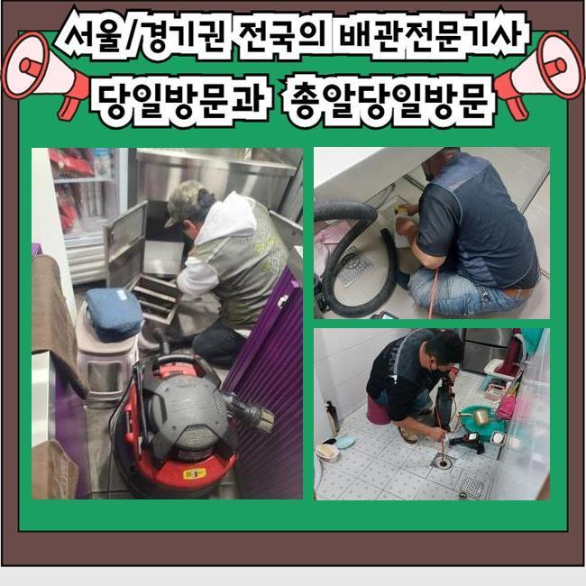
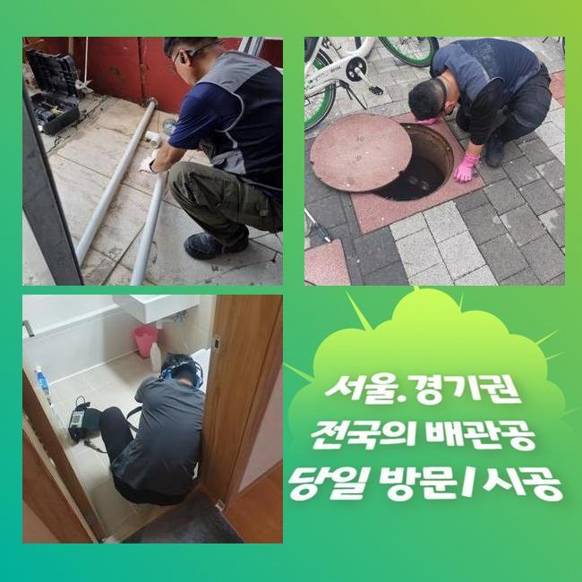
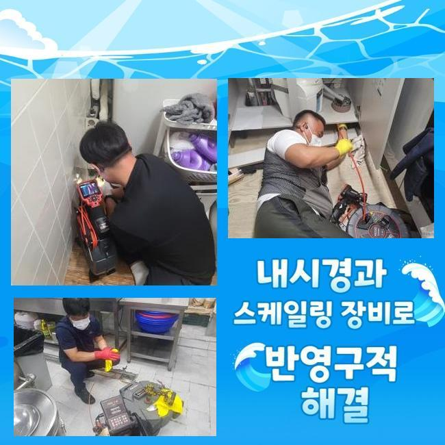
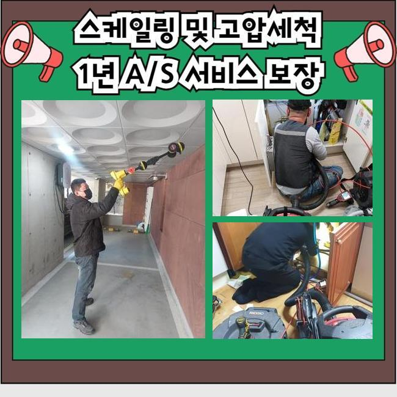
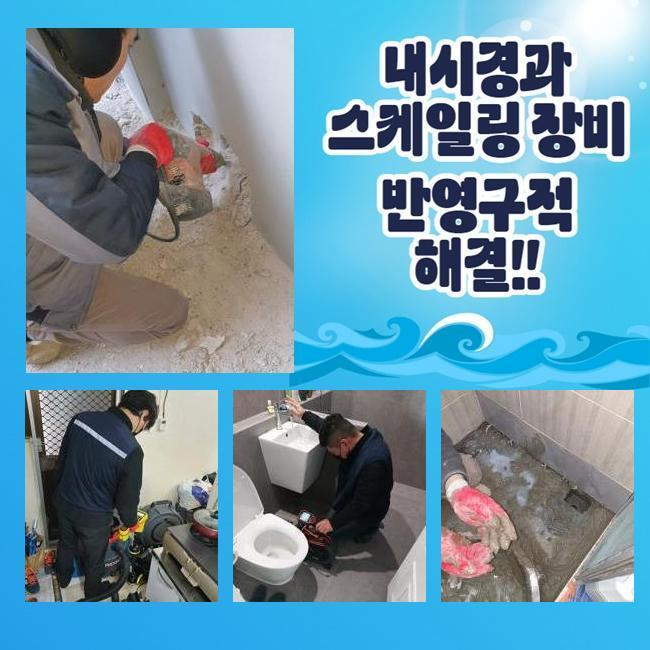
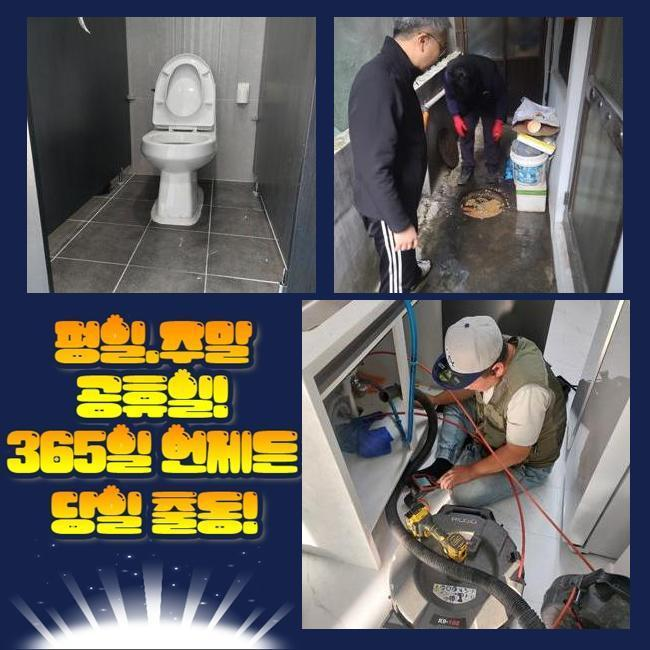
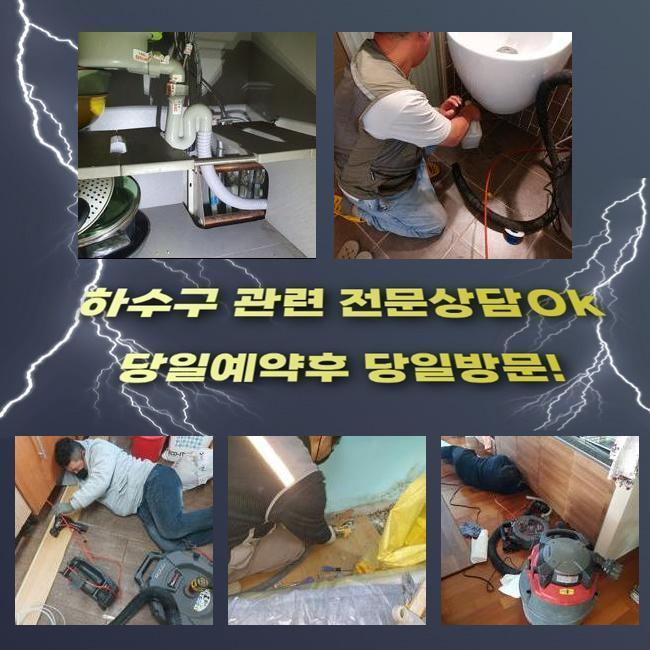

🏠 부산중구 싱크대역류 변기부속교체 화장실배관청소 하수구곰팡이
용인 싱크대막힘 전문 시공 후기

📋 작업 개요
- 위치: 용인
- 서비스 유형: 싱크대막힘, 변기막힘, 하수구막힘, 배관막힘, 집수정막힘, 역류해결, 뚫는업체, 배관청소, 악취차단
- 작업 일시: 2024. 11. 10. 3:51
- 업체명: 하수구수사대 (010-5615-2118)
🔍 문제 상황
부산중구 싱크대역류 변기부속교체 화장실배관청소 하수구곰팡이
하루에도 몇 번을 쓰는 화장실 배수 경로가 봉쇄되어 버려서 용수가 그대로 고이다 못해 속에서 치솟기까지 해서 어떤 일인지 점검을 해보았습니다
바닥부로 물줄기를 버리는 과정을 포함해서 세면 시설 내에서 수도를 틀었을 경우에도 막힘과 역류가 어김없이 끊이지를 않았습니다
이 글을 보고 계시는 현재 거주하고 계신 장소에서도 유사한 사건들이 터져서 배수구 수리 서비스를 수소문 하시지는 않나요?
화장실 안쪽의 배수구가 마비되었을 때의 이유는 어떤 것이며 무슨 장비를 써서 수리하는 지 공개하겠습니다
원래라면 하수구 경로로 폐기되려 이동해야 할 물이 여러 요인으로 흐름이 역전돼서 바닥에 가득히 고여서 악취를 유발하고 있었죠
이는 욕실 주방 욕실의 개수대 쪽에서 수돗물을 틀었을 때도 흡사한 모습을 지닌 증세들이 나타나는 중이었어요
비단 이 현장뿐만 아니라 욕실 막힘으로 거꾸로 치솟고 고였다면 추정되는 사유들은 겹치는 부분이 많습니다
보통 건물들을 들여다 보면 욕실을 비롯하여 베란다 주방의 배수 설비까지가 같은 곳에서 만나서 바깥의 집수정으로 향하는 형태를 띄고 있는 케이스가 제일 많아요
그렇게 한 지점에서 결합돼서든 영역이 건물의 메인관인데 하수의 흐름을 관장하는 설비라고 보시면 됩니다

🔎 원인 분석
💡 전문가 진단: 정밀 진단 장비를 사용하여 슬러지의 고착 여부를 판명하고 타격/세척 작업을 실시했습니다.
중앙부가 가로막혔으니 샤워 세안을 하는 욕실부터 전체적인 건물 공간에서 수도를 쓰고 난 다음에 원만히 흘러가지 못하고 역류까지 벌어지는 것이죠
무언가로 인해 꽉 막힌 메인 배관 속을 정돈해주면 어려움이 극복될 것입니다
제일 유력하다 생각되는 보일러실로 발걸음을 옮겨 지금 하자가 존재하는지를 분석을 해보았습니다
다년간의 경험을 통해 보면 막히는 증세가 집중된 지점이 보일러실이라 생각되어 여기만 잘 수습을 해주면 의무적으로 들어가야 하는 작업을 감소시키고 빠르게 물길을 내드릴 수 있을 듯 했어요
집안에 난리가 나게 만든 원인으로 간주되는 물체의 정체와 고유한 속성을 캐치해내기 위하여 배관용 카메라를 관로의 내측으로 넣어서 검토 해보았어요
심지어 일부 전문가들은 배관 속 촬영기기를 통한 배관의 상태 분석을 거치는 단계를 쏙 빼고 작업을 하는 케이스가 제일 많아요
이는 고도의 전문성이 있는 업체의 처리 방법이라고 단정할 수 없고 이슈들을 추적하는 목표에 성공하지 못할 것입니다
따라서 해당 장소에서 배수가 끊긴 이유가 무엇일까 정확히 식별해낸 다음에 관통 업무에 돌입해야만 재발이 일어나지 않게끔 솔루션을 구할 수 있습니다
특화된 내시경 기기를 작동시켜서 관찰을 해봤더니 화면에 황색으로 응고되어 있는 노폐물들이 가득하니 엉겨붙어 있음이 보이더라고요
집안의 화장실 안에 매설된 배관들은 주방 파이프와 만나서 옥외로 흘러나가게 되는 시스템이라고 언급을 했습니다

🔧 작업 과정
모발과 음식물 찌꺼기 등이 장기간 축적되면서 관로를 차단하게 된 것이 이 공간의 배관 장애의 커다란 동기가 되었다 싶었어요
오랫동안 처리가 안 되면서 물이 아예 끊기게 만든 노폐물을 치워준다면 하수구멍에서 넘치는 물도 갈무리 지을 수 있을 것입니다
이때 기능을 발휘하는 장비는 하수구를 정비하는 과정에서 흔하게 찾게 되는 관통력이 좋은 스프링 기구라 명칭되는 청소 도구예요
꼬여있는 금속의 스프링 형상을 지니고 있는 구성 요소와 본체를 결속한 이후에 작동시켜요
이러한 날렵한 스프링을 처리를 해주려고 예정된 구역에 배정하고 전원 버튼을 눌러주면 장치의 최전방에 닿기까지 동력이 퍼집니다
이러한 파워를 기반으로 고속으로 회전되는데 잔뜩 이물질이 낀 배관에 타격을 형성하는 겁니다
이렇게 진동하면서 파이프의 여기저기에 산발적으로 장기간 머무르고 있던 이물질이 떨어져 나가면서 자연스럽게 배출이 된다거나 겉으로 투출이 되면서 내부가 깨끗하게 되는 겁니다
초반에는 꿈쩍도 하지 않던 외부에 마련된 배수시스템이 저희의 스프링 장비로 관통을 해주고 나자 성과가 바로 눈으로 보였는데요
반복적인 청소를 거친 다음에 재차 내부 분석을 해보니 오수에 기름이 녹아있던 혼탁한 물이 제거되고 깨끗한 생활용수가 멀쩡하게 방출되는 모습이 보였습니다
이런 결과를 받았다는 것은 불필요한 내부 물질이 전량 척결되었기에 배수로가 뚫렸음을 시사하는 것입니다
얼마간의 하수구 뚫는 작업을 하고 난 후 다시 카메라를 메인배관에 넣어 상태를 확인해보기로 했습니다
관로 속에서 변성이 되며 구린내까지 올라오게 만들었던 오염물질은 흔적 없이 사라져서 업그레이드가 된 듯 위생적이게 바뀐 것을 사진으로 살펴보실 수 있습니다
신축급 건축물이라고 할지언정 물을 여러 용도로 활용하면서 쓰레기도 같이 떠내려가기 때문에 오염물질이 켜켜이 쌓여가면 차일피일 청소가 미뤄져 버리면 물길이 완전 가로막히거나 미생물이 증식하는 등의 다양한 유형의 부작용이 앞길을 가로막을 것입니다
어떤 건물이라도 마찬가지로 벌어질 수 있는 사안이니 이번에 소개한 절차와 같은 전문 배관 정비를 받아보는 것이 건물 안전을 위해 필요해요
오수가 울컥대며 나오던 일도 더이상은 없는 지 끝으로 체크를 했고 이번 현장 내 작업 흐름을 종료하기로 했습니다
실내가 한층 깔끔해진 것을 즉각 인지할 수 있었고 보람이 느껴지더라고요


✅ 작업 완료
욕실 이외의 다른 곳에서도 테스트 겸 수돗물을 틀었었는데 적절한 속도를 유지하면서 물이 정상 배출되는 점도 꼼꼼히 확인을 끝냈습니다
욕실배관의 마비로 인한 환경을 방해하는 문제들이 설계해둔 절차를 빠짐없이 수행해서 완성도 높게 청소를 마쳤습니다
고객님이 머무르시는 건물처럼 어떤 공간에서도 하수 시설이 흐름 방해가 생긴다면 이를 낫게 해주는 법도 오늘 보여드릴 사례와 거의 같은 수준일 것입니다!
지금 일어나고 있는 사태가 어떤 것인지 간소화하게 정리해서 말해주시면 준비를 해가서 뚝딱뚝딱 설비를 복구시키겠습니다!
스케줄을 조속히 설정해 드리므로 더는 조치를 미루지 마시고 한시라도 빠르게 하수시스템을 되돌리셨으면 합니다




⚠️ 주방 싱크대 배관 막힘 예방 수칙
- ✅ 기름기가 묻은 식기나 프라이팬은 설거지 전 키친타올로 반드시 기름때를 닦아내세요.
- ✅ 주기적으로 싱크대 개수대에 뜨거운 물을 가득 받아 한 번에 내려 배관 내부 기름을 씻어내세요.
- ✅ 배수구 거름망을 미세한 필터로 사용하시고 음식물 찌꺼기가 틈으로 새어 들지 않게 관리하세요.
- ✅ 베이킹소다와 식초를 뜨거운 물과 함께 일주일에 한 번씩 부어주면 배관 살균과 막힘 예방에 좋습니다.
💡 핵심 정리
- 확실한 장비 작업(내시경 점검 및 샤프트 스케일링)으로 원인을 뿌리 뽑습니다.
- 작업 후 1년 이내에 동일한 부위 재발 시 100% 무상 A/S 서비스를 보장합니다.
- 서울 · 경기 · 인천 전 지역에 24시간 언제든 긴급 출동할 수 있도록 항시 대기 중입니다.
❓ 자주 묻는 질문 (FAQ)
🚨 용인 싱크대막힘 문제로 고민이신가요?
정확한 원인 진단과 확실한 시공으로 재발 없는 해결을 약속드립니다.
24시간 긴급 출동 | 서울 · 경기 · 인천 전지역 | 1년 내 재발 시 무상 A/S